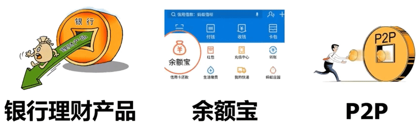
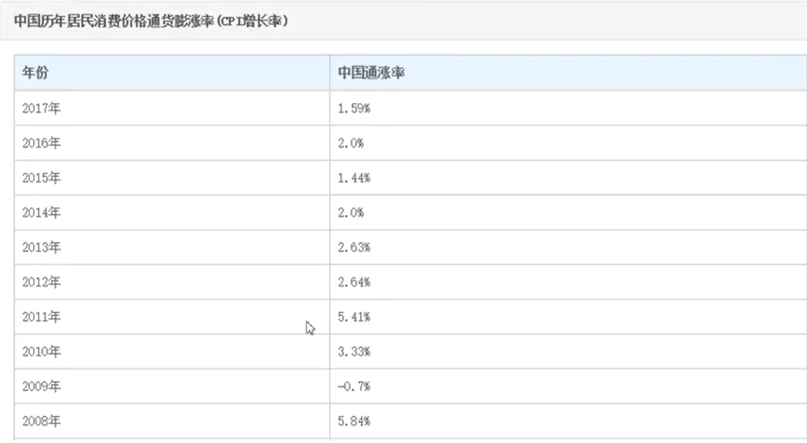
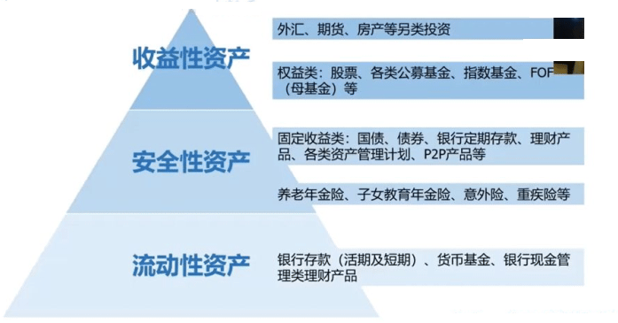

投资
投资理财课
主持
- CFP
- 硅谷对冲基金 Paretone Capital 高级合伙人
- Stanford GSB 师从谈判专家 Mararet Neale
- MIT Media Lab-CryptoCurrency 师从反洗钱专家 Lourdes C.Miranda, Neha Narula, 前 CFTC 主席 Gary Gealsler
说起理财，你首先想到什么？

理财的误区
- 有很多钱才能理财
- 理财只有金融专业的人才能做/才需要做
- 学会理财后可以短时间变有钱
理财的关键点
- 辨别力：资产和负债的辨别
- 自控力：不做不必要的消费，尤其是短期情绪性消费，养成记账的好习惯
- 理性认识：慢慢变富，理财要坚持
- 抗风险：
- “黑天鹅” 一般指那些出乎意料发生的小概率风险事件
- “灰犀牛” 指那些经常被提示却没有得到充分重视的大概率风险事件
- “明斯基时刻” 主要指在经过一段时期的经济平稳发展，负债不断提高难以持续，债务风险忽然爆发的资产价值崩溃时刻（拐点）。
- “反脆弱” 不直接等于抗风险，赢亏比。
车是资产还是负债？车如果产生支出就是负债。短期情绪如吃喝玩乐。理财贵在坚持。
理财的重要性
A 和 B 是两个在北京律师事务所工作的小伙伴目前薪资都是一万元。 A 理财，B 不理财。之后是差距多大？
复利公式
\begin{equation*} 复利终值 = 期初金额(1+利率)^{计息期数} \end{equation*} \begin{equation*} F = P(1+r)^n \end{equation*}- F: 终值(Future Value) ，复利终值，即期末本利和价值
- P：现值(Present Value)，或叫期初金额
- r：利率
- n：计息期数
范例： 5 万存 1年，年利率 3%
#coding: utf-8 P = 5 r = 0.03 n = 1 F = P * ((1+r)**n) #复利终值： 预计收益： ) print("F = %s, I = %.5f" % (F,F-P) ) #: F = 5.15, I = 0.15000
复利计算器：https://m.ibaodian.com/html/h5/littletool/fuli.jsp?from=groupmessage
理财和通货膨胀密切相关

通胀率算法
\((当年 CPI - 前一年CPI) / 前一年CPI \times 100\%\) (曼昆经济学原理)
https://zh.tradingeconomics.com/china/inflation-cpi
官家统计局：https://www.stats.gov.cn/
- 用来购买核心资产的钱，能贷多少货多少
- 尽可能不要借钱
不是所有不是说房就是核心资产，不是说所有的是资产的就是核心资产，核心资产是什么？就比如说房，那它就是一线城市核心地段的房。比如说股票，它就是蓝筹股，龙头股那些细分行业里的龙头股，这样说更准确一些。比如说调味品行业里面的海天味液，只是举例，不是让你买，然后白酒里的茅台。我给到大家非常重要的一点建议，就是用来购买核心资产的钱能贷多少贷多少。
总有人提前还完房贷，觉得有这个房贷在就有这个压力在，我就一定要就是还还完所有的房贷，甚至我不去贷款买这个房子，这个房子才真正属于我。其实其实不是这样的，就是房贷，可能是你就目前能拿到最便宜的贷款了。就是钱被稀释了，现金被稀释，那你的债务也被稀释了，你想一想几年几年前几十年前在北京买房的人，他们当时房贷。比如说1000多一个月，那他们先还1000多一个月，根本就不吃力，对吗？那未来来说是一样的，那你先不贷这个钱拿你现在手上的这个一块钱。它在未来可能就是一毛钱了，然后你去把这个可能性给划掉了，然后你选择不去贷款，这其实是愚蠢的决定，就一定要能带多少带多少。
第二点就是尽可能不要借钱。非常多的人像我一样，就是脸皮比较薄，或者怎么样，但是尽可能不要借钱。先不说你友谊的小船翻不翻这个钱能不能要回来？假定这个钱要回来了，那你也是亏的。你现在的一块钱和以后的一块钱是同样一块钱吗？现在一块钱和以前的一块钱是同样的一块钱吗？你看看以前的万元户，那现在要是万万元户就比较普通。
大学生
生活费 2000
- 日常生活支出 800
- 提升专业技能的钱 20-30%
- 社交 AA
存款
保持流动资金没有问题的情况下，能存多少是多少
在职
工资 6000
- 日常生活支出 3000
- 提升认知水平的钱 10-20%
- 社交支出
- 存款
保险
买保险关键点，不要买存钱那种，千万不要拿保险理财。年华是指预计给你而不是保证给你。
开始尝试投资金融产品
投资方式上可以尝试定投，投资权益类的如指数基金
培养自己的嗅觉，为以后的收益或者复利打个底。
家庭
家庭日常支出
少消费原则
教育支出：自己&孩子
大头
抗风险
抗风险意识。提高法律意识，律师费还是要交的。
存款
保证自己有随时可用的灵活的钱就可以了。不用占很大比例，但是主要配置还是核心资产上。
父母养老支出
不只是法律上和义务上的，把父母也规划到未来里面
生活品质提升选择保值消费品
比如买车，关心点在安全上，不会花太多钱。比如包，二手奢侈品市场，用完再卖。
- 投资抗通胀
下面我们细化一下，怎么投资抗通胀。
一般六大类投资品种：现金、固收、权益、商品、不动产、另类
- 现金：指现金、银行存款、货币市场基金和期限小于 7 天的债券逆回购等。相对最安全，比较灵活的。可以放一些短期生活的钱。
- 固收：指投资于银行定期存款、协议存款、国债、金融债、企业债、可转换债券、债券型基金等固定收益类资产
- 权益：指通股、优先股、全球存托证和美国存托凭证、房地产信托凭证等。包括上市和未上市权益类资产。
- 商品：主要指黄金（金属产品）和原油（化工产品），当然还有农副产品。
- 不动产：主要指房子，土地和土地上的附着物。
- 另类：指私募股权、对冲基金、管理期货、Buyout funds、基础设施基金、distressed securities等，在国内通常指邮币卡艺术收藏品之类的，数字货币也算。
风险金字塔

- 收益性资产：
- 外汇、期货、房产等另类投资
- 权益类：股票、各类公募基金、指数基金、FOF（母基金）等
- 安全性资产：
- 固定收益类：国债、债券、银行定期存款、理财产品、各类资产管理计划、P2P 产品等
- 养老年金险、子女教育年金险、意外险、重疾险等
- 流动性资产：
- 银行存款(活期及短期)、货币基金、银行现金管理类理财产品
收益最低的是流动性资产，越往上风险越高。 风险和收益是成正比的 。
金融工具&投资方法
量化策略中不太推荐杠杆，推荐立马能用的
定投
定期定额或者定期不定额投资一个投资标的，建议不定额定期投资，时间越长效果越明显。
如市盈率低于15%时可以买入一份，市盈率低于12%时买入2份，市盈率低于10%可以买入4倍的，有个自己的公式这样就可以平摊自己的成本从而提高收益率。
可以定投的东西非常多，如定投指数基金3年以上，3年以上再说效果。
价值投资
值得投资且以能捏得住的是价值投资。只买不卖
(期权)
争议很大，因人而异。
巧用金融工具，降低风险，提高收益
《期权36课》 清华出版社
看好一支股票，不止可以买入正股，还可以买入看涨期权。
闲钱收益翻倍
假设你现在有里有 1 万元闲钱，如果放在银行的活期，每年利息只有 3 元；如果放在余额宝，每年利息二三百。
货币基金 + 国债逆回购，每年的利息就可以获得 600 左右。
捡钱小秘密
平时的钱买货币基金，每年可以获得 3% 左右的收益。当国债逆回购收益高时，比如大于 10% 时，卖掉货币基金直接买入国债逆回购。这样就可以获得几天的高收益。等国债逆回购的钱回来后，当天买进货币基金（买卖货币基金没有手续费）。
这样在保证资金方便使用的情况下获得 6%+ 的无风险年华收益率。收益率比余额宝高 50% 以上，比活期存款高 1500%。
货币基金打开证券账户，输入货币基金的代码（如511700）和数量，点买入就可以了，国债逆回购同理。
国债逆回购
本质就是国债抵押借款。手里有国债但是缺钱的人把国债抵押了借钱。手里有钱的人把钱借出去。
比如 A 手里有一万元，B 手里有一万二的国债。B 把一万二的国债抵押了 A 把一万元借给 B。如果到期了 B 没有还钱，那么一万二国债就会被卖掉还给 A。有时市场缺钱，7 天的逆回购年化利率可能高达 20% 左右。3 天之后本金和利息就自动到账(周四操作 1 天期逆回购，占款 3 天，周五操作三天期逆回购，占款一天)
国债逆回购收益包含两部分:第一部分是债券到期收益，第二部分是溢价收益。国债逆回购期限越短利率越高，以一周的为例，国债逆回购的 年化收益在 4%-46% 之间。
可转债
可以转换成股票的债券，在 100 元以下买进高信用等级的可转债几乎无风险。股市上涨的时候不能获得超额收益。是一种收益下有保底，上不封顶的投资工具。一般 90 元以下买进，年华收益率可达到 10%-20%。
基础选股，不当韭菜
打开选股网站:TradingView/爱问财
ROE 代表净资产收益率，也就是企业的盈利能力
- 先把ROE设定为大于15%。
- 然后找连续5年净资产收益率大于15%，说明公司盈利能力的持续性比较好，满足这个条件的公司才有成为好公司的潜质
- A股，连续5年的ROE大于15%(281家)
- 连续5年的ROE 大于15%，连续5年的净利润现金含量大于80%(95家)
然后从 95 家中找到行业龙头分析更多的指标，也比听什么买什么好。
范例： 在爱问财搜索框中输入下面条件
净资产收益率大于15%，连续5年净资产收益率大于15%，连续5年的净利润现金含量大于80%
指数基金
买个股的推荐买指数基金。分为主动型和被动型，推荐买被动型。
指数就是一个股票的榜单，用来反映股市的情况。
股市中有几千只股票，我们如何统计某一类股票的平均价格呢?为了解决这个问题股票指数就诞生了。例如沪深300指数，沪深300指数就是从上海和深圳证券交易所中选出300只规模最大流动性最好的股票进行加权平均编制而成的指数。
指数是不能买的，基金按照指数中每个股票的权重购买这300家公司的股票，这样基金的涨跌会和沪深300指数的涨跌一模一样。这就是沪深300指数基金。
基金可以分成主动型基金和被动型基金，通常我们说的股票基金都是指主动型基金这种基金由基金经理决定买哪些股票。而被动型基金就是指数基金，只根据指数配置股票，不人为选择股票。推荐买被动型。
各个市场开户流程及券商推荐
- A 股： 中信、华泰。因为操作感觉比较好。
- 港美股： IB(Interactive Brokers)、富途、雪盈、老虎、Firstrade(公开课、严报等)
- 衍生品：CME
提升推荐
书籍推荐:
富人思维:《穷爸爸富爸爸》
像现在我们经常说的穷人思维，富人思维。其实就是穷爸爸，富爸爸这本书带出来的，主要是教你怎么辨别资产和负债
入门教育:《小狗钱钱》
可以去作为一个给孩子的理财的启蒙，做一个财商的启蒙，你自己学的同时，你也可以教孩子把零花钱压岁钱分成几个钱包，然后一份儿买你喜欢的东西，一份儿给比如说朋友，教会他分享，然后一份儿比如说给妈妈买个小礼物之类的，也让她学会了这种感恩，通过理财教会他很多东西
- 全面体系化的学习:《香帅金融学讲义》
进阶学习:曼昆-经济学宏微，米什金-货币银行学，罗斯-公司理财，约翰赫尔-期货与期权市场导论，博迪-投资学
上面按顺序读，由更宽到更窄，达一个金融本科生水平是没有问题的。
网站推荐:
- 选股网站:TradingView/爱问财
- TradingView https://www.tradingview.com/
- 爱问财 https://www.iwencai.com/
资讯APP:Investing/Medium/Bloomberg/经济学人商论及各个券商
雪球可以模拟操盘
- 数据:TradingEconomics/国家统计局
我们要做什么？
- 货币基金+国债逆回购组合操作用起来
- 开始定期不定额买入指数基金. 3年以上
- 开始筛选和关注值得价值投资的标的。开始培养自己的嗅觉。
- 少消费，多购入核心资产
- 记账!记账!记账!
- 至少年底给自己或家庭做个财报三表（资产负债表、现金流量表、利润表）。可以做月报、季报、最少有个年报
- 用复利计算器动手算算，给自己定个小目标。因为只有你算你自己的钱才会有一个最直观的冲击。
- 做一次风险偏好评估(客户投资风险偏好评估调查表)。这个有助于你更了解自己能接受的一些投资标的范围，是保守型还是激进型。